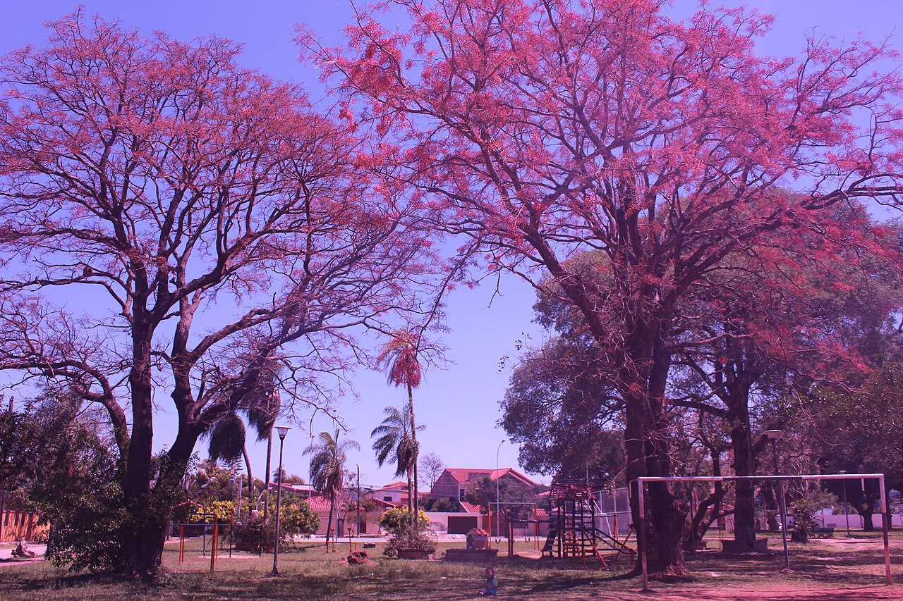
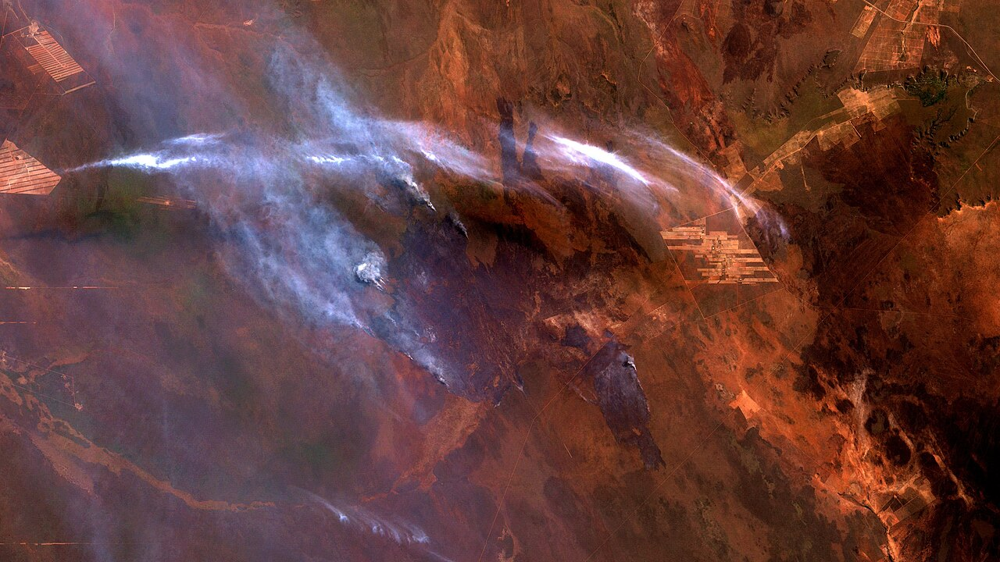
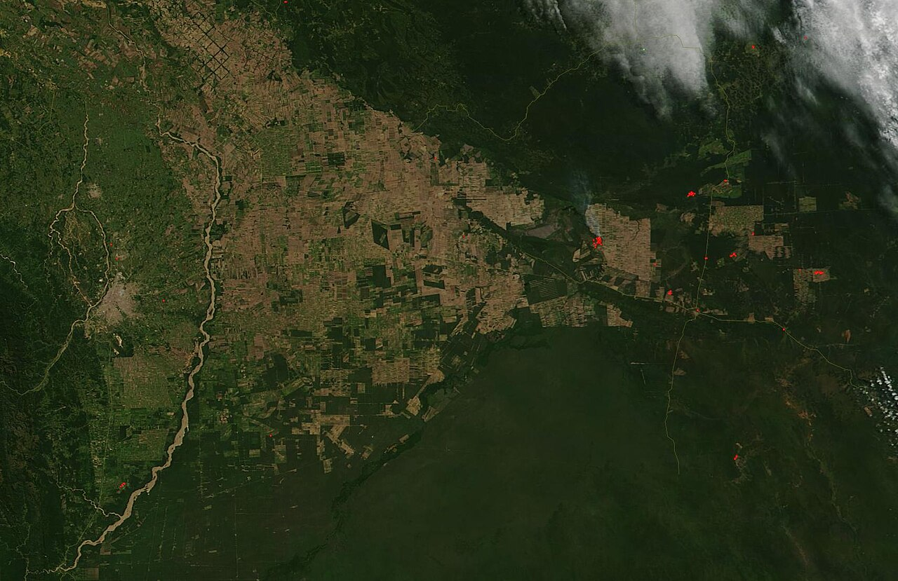
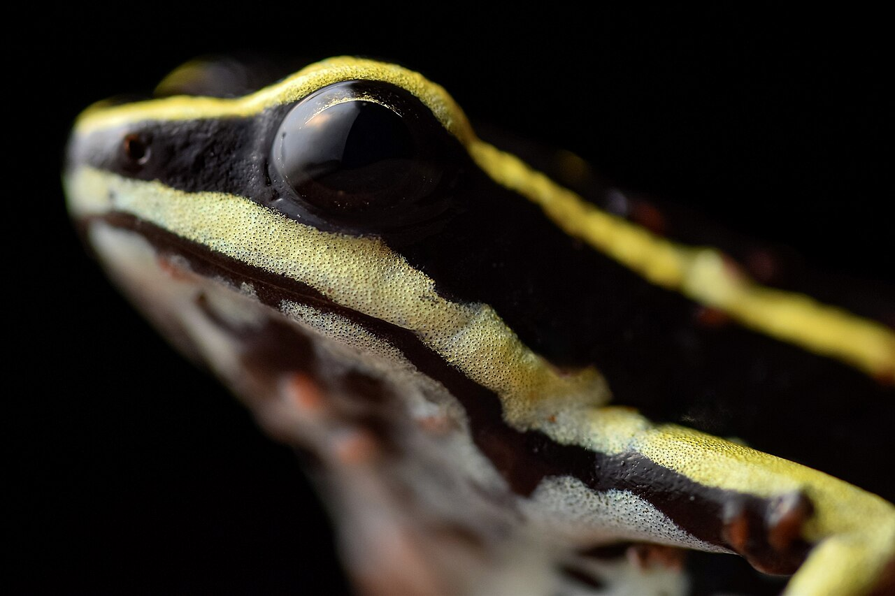
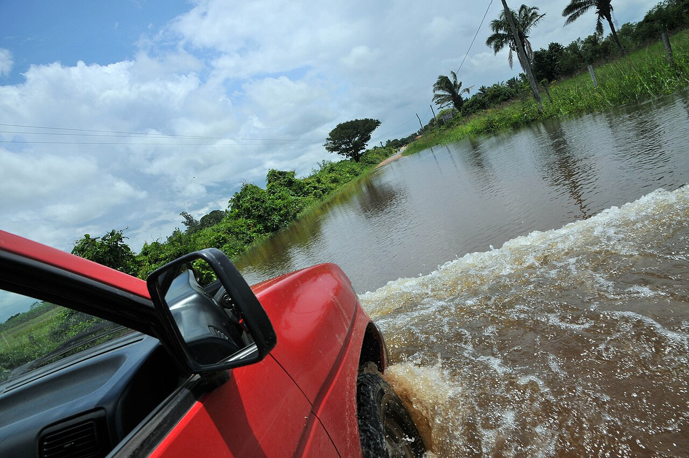

Paso 1
Dices dónde está tu chacra
Con el GPS del celular, eligiendo tu comunidad o tocando el mapa.
Compara varias formas de rotar tus cultivos y entiende por qué cada una te conviene o no. Sin escribir, en menos de un minuto.
Funciona con datos de NASA POWER y MODIS.

Con el GPS del celular, eligiendo tu comunidad o tocando el mapa.
Tocas el cultivo de hoy y hasta 2 prioridades, como ahorrar agua o cuidar la tierra.
Una recomendada, una alternativa y lo que haces hoy, con la rueda del año mes a mes.
Estos problemas son reales y se repiten cada año. Por eso comparamos rotaciones con datos satelitales.




Fotos con licencia libre de Wikimedia Commons y NASA. Créditos en img/CREDITOS.md.